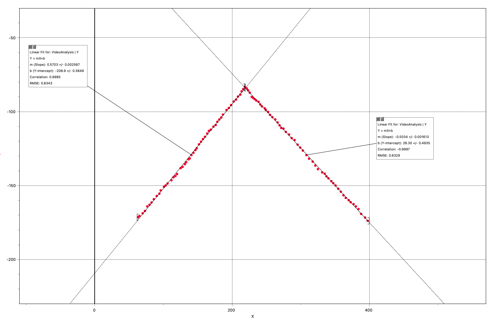
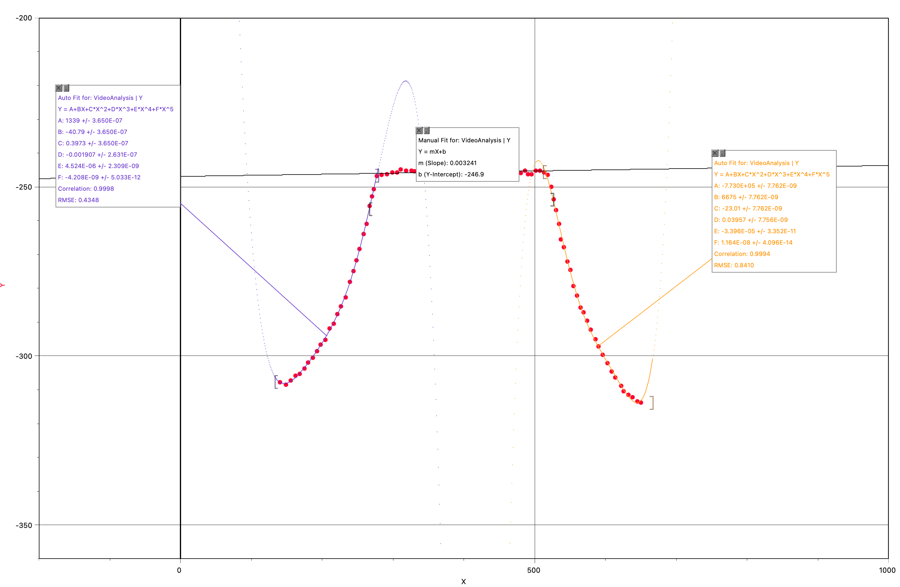
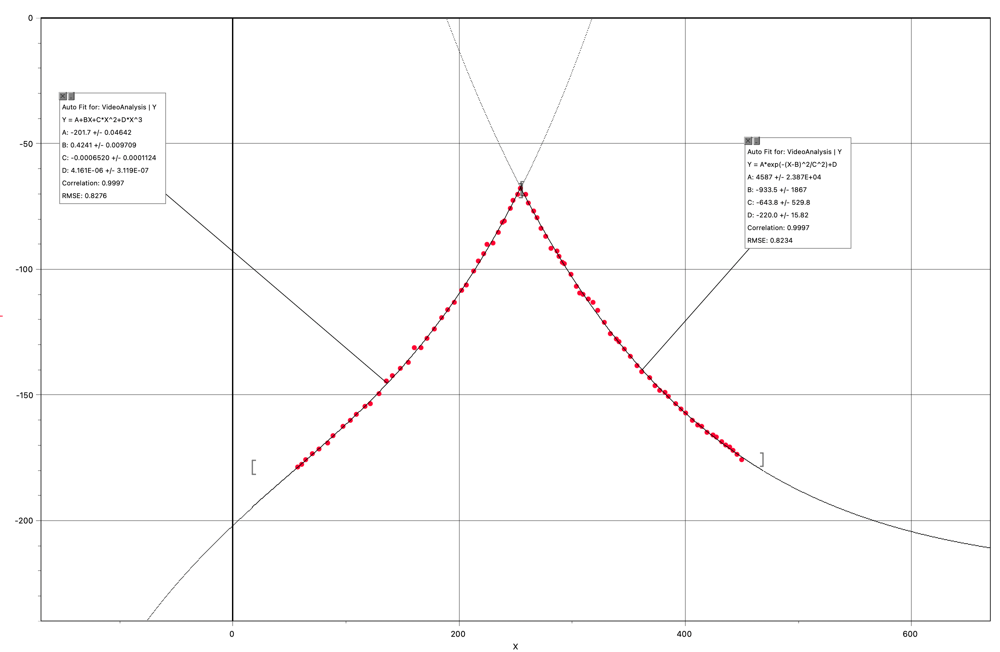
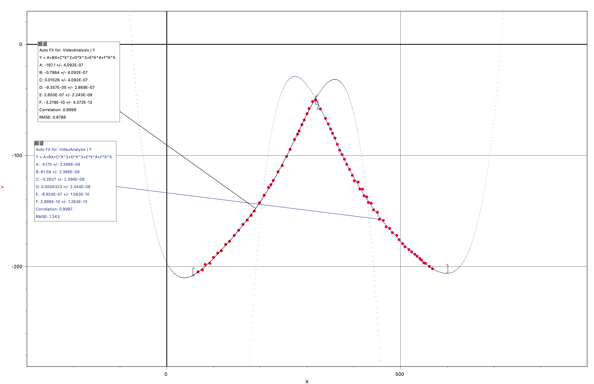
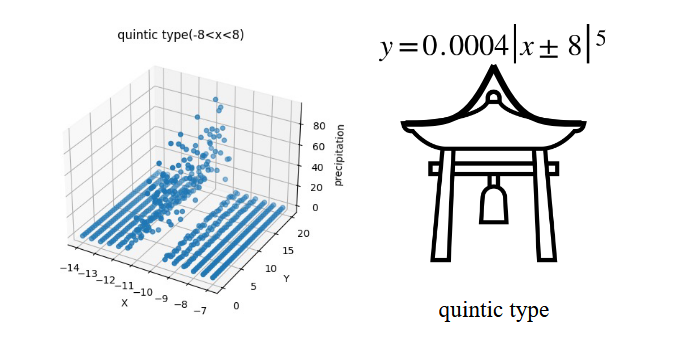
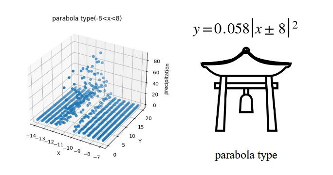
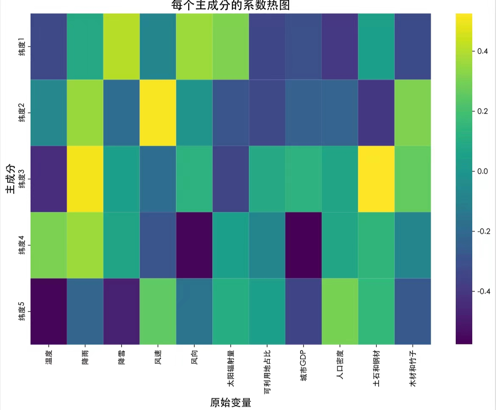
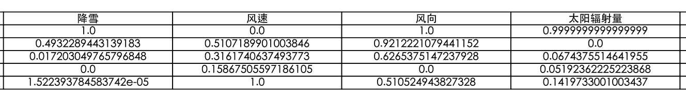
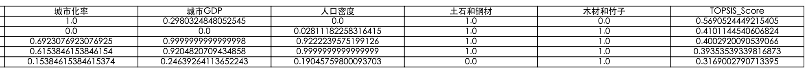

摘要
自古至今，屋顶在人们的生活中不可缺，它不仅起到遮风、挡雨、防晒、保温、隔热的作用，同时还代表着家庭和睦、民生安全，更在历史中象征着权力地位。屋顶所处地区的气候特征影响屋顶屋顶结构，人们的品味、历史的进程，也在潜移默化地作用于屋顶结构样式的演进。不同地区的屋顶样式、曲度、坡度各不相同，每一种屋顶都有其独特的优势，亦存在缺陷。长久以来人们试图找到最适合某一地区的最优屋顶配置，但由于环境、经济、人文的多种因素，此问题很难完美解答。因此，本文根据题目中的三个问题，试图找到不同地区屋顶的最佳配置。
针对问题一，本文根据雨水从屋檐抛出的最远距离和落雨量的密集区域判断屋顶抵挡暴雨的能力。本文首先列举了典型的 7 种不同类型的屋顶——悬山顶、硬山顶、 庑殿顶等，然后使用catcher pro等软件模拟了其中 4 种屋顶在暴雨来临时的水流抛出落点，最后结合上述流体模型找出最佳的屋顶配置。在此问题中，本建模小组将屋顶形状抽象为其屋檐对应的曲线方程，并根据此方程使用catcher pro和fluent进行数据模拟，得出暴雨水流落点的相关数据。随后利用权重分析的方法得出了能够最好的将雨水‘抛出’的屋顶——坡屋顶。
针对问题二，本文先确定了要研究的屋顶表征——曲度和倾斜角度，随之又找出了影响表征的因素，包括环境、经济、人文三方面。为了找出具体、准确的数值，本文在数学模型中暂时排除了人文因素，主要关注于环境和经济因素。为了找出普遍优点，本建模小组先找出了五个分布在不同地区的省份的特色房屋建筑，测量出了具体数值并且使用PCA分析法找到了主要的影响因素，比较了该因素与屋顶的相关性。随后，为解决“找到不同地区的最佳屋顶配置”的问题，我们使用了商权法-TOPSIS最 短路径分析法客观地确定评分，再将屋顶坡度以及曲率和纬度的关系式一一带入，找出适用于不同地区的屋顶最优配置。
本文的创新之处在于第一问的仿真模拟模型和第二问的解题方法。第一问使用了catch up的3D建模并用fluent真实的模拟出了暴雨的具体发生情况，随机出雨滴大小与雨滴分布位置。同时屋顶的建模也还原了最真的的样貌，可以最真实的观察出暴雨时滴落雨滴的抛出距离。第二问中，本建模小组将所有指标与纬度建立了联系，确定了函数关系，使用PCA找到了主要响因素，再将此带入到TOPSIS模型中去客观的确定评分，找出最优配置。
关键词： 屋顶；屋顶坡度；传统屋檐； PCA ；熵权法； Topsis
1. 问题重述与分析
1.1 问题背景
宋代的陆游曾在《暴雨》中写过：
风怒欲掀屋，雨来如决堤。
孤灯映窗灭，羁鸟就檐栖。
屋顶在众人的生活中起到了重要的角色，它不仅能够抵御自然外界的不利因素，给我们提供庇护，还能够体现出美学价值。在亚洲传统屋顶，尤其是中国屋顶中，屋顶的重要组成部分就是飞檐。飞檐扩大了采光面，还能够将雨水抛出，远离建筑物，利于排水。
历史中随着朝代的更迭，地域的变迁，飞檐的形式也越来越多，翘起的角度，长度也不同。于是该如何从不同类型的飞檐找出排水功能最好的引起了人们的注意，更是引发出了人们对翘角屋的重要程度以及适合的不同地域的屋顶配置的好奇心。
但是，由于评选指标各异，人们观点不一致，无法确定出最好的屋檐。因此，选取合适指标并建立科学的数学建模去找出最好的以及合适屋檐变得必要。
1.2 问题重述
问题一要求建模团队参考中国传统屋顶在没有凹陷点，特殊排水系统，并基于实际情况下用雨水从屋檐‘被甩出’的距离来衡量哪种屋顶形状在暴雨中最好。
问题二要求建模团队找到历史中其他地区不用翘角屋顶而用简单的屋顶的影响指标，并建立评判特定气候下对应该气候的特定屋顶的优势的模型，再找到不同地区的最佳屋顶配置。
1.3 问题分析
对于问题一，本文首先辨别了图片中的屋顶类型，并找到典例屋顶建立曲线方程，用此建立模型。再明确暴雨定义及暴雨量后，开始模拟暴雨情况下该屋檐对雨水抛出的远近程度，通过模拟结果的评比找出最佳屋檐。
对于问题二，对于第二题的三个小问题，本文现先考虑到了环境，人文，经济指标，根据文献以及讨论选取指标，在逐步将问题拆为三部分，影响屋顶的形状的的因素，找到特定气候下该地区的屋顶的优点，确定每个地区的合适屋顶配置，逐个进行分析。首先对第一小问，本文先确立了影响屋顶建筑样貌结构的指标，并找出量化结果，随后找出气候指标与屋檐的表征的函数关系，第二问本文使用了TOPSIS法建立模型，将第一问的数据及指标带入找出各个屋顶的优势。
流程如图 1 所示
2. 模型全局假设
- 假设题一中测量的四角攒尖的屋顶的曲面相同
- 忽略计算屋檐上装饰品（定义为与屋檐为一体）
- 假设无自然灾害影响房屋

3. 评价模型的建立
3.1 指标的选取与量化
第二题中，本建模小组全面的进行了综合，跨领域的思考。本文从经济，环境方面两个一级指标向下细化出二级，三级分级指标并针对各项指标进行细化，量化，如下表显示。各指标在数据类型上可分为数值型（通过查阅资料得出）以及布尔值（判断有无，有为 1 ，无为 0 ）来判定房顶的优良性和合适性。
变量在下表中列出。

下面我们将解释各项指标的选取因素：
通过文献及资料搜索，本建模小组发现中国古建筑的特征体现了当地的地域特征和风俗文化。中国古建筑是人类和外部环境决定下而生成的产物，在各个地域都表现出了不同的特点。尤其是屋顶，其结构以及装饰都体现出了当地习俗及地域性特征。
3.1.1 环境
通过资料搜索，中国古建筑及民居体现出了当地的地域环境，坡顶的倾斜程度，翘角的有无，都与它处在的地理位置，环境息息相关。环境可以通过气候和地理位置体现，影响到不同地区的建筑形式，本文将此作为二级指标。
气候：及天气现象对房顶的影响，影响气候的基本因素为降水和温度，可以将降水降雪温度的多少以及变化量根据月平均温度，月平均降水降雨量进行量化；同时气候也包括风力，风速，太阳光照角度，辐射强度，日照时长的对天气影响，可以通过每月正午太阳高度角，紫外线指数，太阳日照时数进行量化，为三级指标。
生态资源：可以从可利用地以及是否有对应屋顶的材料进行判定。历史上，是否有相对应的材料直接决定了当地是否有能力建造出相应形状的屋顶，同时可利用地的占比也决定了房型的大小，从而导致了屋顶的坡度不同，改变了屋顶占有的空间。
3.1.2 经济
建造房屋以及屋顶时，人们还应该考虑到经济因素是否能够支持该建筑的搭建以及保持。根据经济可以分为建造成本以及维护成本两个二级指标。
建造成本：在考虑建造房屋房顶时，应该考虑它的用材，及地区经济能力，和搭建它所需要的劳动力两个三级指标，可以通过城市年度GDP以及中国人口密度分布反映出。
维护成本：搭建完后，它的成本还需要考虑维护房屋的定期维修时间，单次维修费用等。通过是否为土石，钢筋建造或是否为木材竹子建造可以判断出房顶的耐用程度和坚固程度。
3.1.3 人文
建筑常常受到当地的文化习俗，历史传统，美学价值观的影响。不仅仅是国内，国外的历史建筑屋顶也因受到文化，不同时期的影响而构造结构不同。此因素十分重要，但因为难以测量数据，不会在模型中详细且具体体现出。
3.2 模型优劣分析
PCA主成分分析法可以帮助本研究找到对屋顶形状影响较大的因素（如：气温、降水等等）。PCA可以实现数据降维的作用，同时保留大部分数据特征，有利于简化本研究。在得出对屋顶设计影响最大的因素后，本研究可以推出屋顶的优点。例如：如果降水量是影响较大的因素，且南方的屋顶由于降水量较大而设计的坡度较陡，则这种表征就可以被看作这个屋顶的优势，有效回答题目问题。但是，PCA模型也有必然缺陷。虽然PCA在算法中保留了大部分数据特征，但是在数据降维的过程中会丢失信息。
本研究还结合了熵权法和TOPSIS分析法进行研究。为了避免人为赋值权重所带有的不严谨性，熵权法可以在数据中计算出每一个影响因素的权重，体现出本研究的严谨性。同时，我们使用TOPSIS对屋顶方案进行打分，结合熵权法所赋予的权重，得出每一个屋顶的评分。这样，本研究就得出不同地区的最佳屋顶配置。
4 问题一求解
4.1 屋面方程的建立.
在本问题中，根据文献搜索并与图中的屋顶的比较，本建模小组将图片中的屋顶类型分为卷棚类屋顶，破山顶，悬山顶，硬山顶，四角攒尖和庑殿顶。在寻找屋顶曲面方程时，为找出各屋顶的方程结构判断了屋顶是否是中心对称，轴对称或不规则的图形。从侧面测量，本建模小组确定了悬山顶，硬山顶等屋顶的屋顶曲线方程能够用轴对称分析；从俯视看，本建模小组确定了四角攒尖为中心对称，再从侧面角度计算出了屋顶的曲线方程。对于庑殿顶，由于为不规则图形，需要将图形切割分析出屋顶的曲面方程。
4.1.1 轴对称.
轴对称屋面的典例：（卷棚式）悬山顶，（尖山式）硬山顶，坡屋顶。
从正面看，悬山顶和硬山顶的样式为矩形，从侧面切开后函数图像都是一样的，不会变化，可以直接从横切面转化出屋檐斜面的函数。本建模小组用了根据屋檐的函数图像在Logger pro上进行线性拟合。
4.1.2 中心对称
中心对成屋面的典例：四角攒尖顶
因为中心对称不能完全确定出房顶的曲面方程，故需要先证明四角攒尖房顶的中心对称可以转换为轴对称，下面证明中心对称与轴对称屋面的方程拓扑同型：
如图所示，作俯视图（以俯视正方形中心对称屋面为例）

对于四角攒尖顶，先俯视看图。建立坐标系，将顶点设为O，再用Z轴沿OD切一个面，使D点与ξ 1 轴相交；再用Z轴沿OC切一个面，使C点与ξ 2 轴相交。两个切面上曲线如图所示，下面证明两个曲线同型：做PQ与CE平行，得出△OPQ

与△OEC相似，得出OP/OQ=OE/OC。 这表明两曲线只发生了自变量的伸缩变换，即
$ y = f(\xi) \rightarrow y = f(k\xi), \quad \text{where } k \in (0, 1] $
由此可知，中心对称的切线的函数类型没有变，可以从拓扑结构角度转化为轴对称函数型屋面。
4.1.3 不规则图形
不对称型屋面的典例：庑殿顶。
对于庑殿顶，可以先从正面看，将此分为左边，中间，右边三个部分。因为中间为矩形，可以得知它中心对称，在侧面进行拟合。可以将左右两边看为中心对称，再次通过中心对称的方法进行拟合。
4.2 拟合与仿真模拟.
通过搜索资料，本建模小组先确定了暴雨的定义。在 24 小时中降水量为 50 毫米或以上被称为‘暴雨’。本建模小组先用catchup对屋顶方程式进行了3D建模，再在Fluent软件中模拟了100mm/d的降水量，用此方法测量出了雨水抛出的距离。
拟合结果如图所示。通过图像可得知（尖山）硬山顶的曲线方程为五次函数，而四角攒尖的屋顶因为中心对称，拟合后的次数为五次，故归并到（尖山）硬山顶的五次函数中，结果如图所示。
破山顶拟合后的函数为一次函数，对于（卷棚）悬山顶，拟合后得出的函数图像为二次函数；而（卷棚）硬山顶拟合后得出的函数图像为余弦函数，同时也测得（尖山）悬山顶为高斯函数。
根据表格给出的数据，本建模小组考虑到了影响水从屋檐抛出的距离决定出最好屋檐的因素，及雨水抛到最远的距离和降雨量最多的距离。本建模小组决定根据客观事实分析出权重并找出最佳屋顶。





仿真模拟结果如下图所示。




基于常识，还有部分文献的参考，本建模小组认为降雨量最多的点占的权重要比抛出最远距离明显重要，因为大部分降雨抛出的距离反映出了屋檐抛出雨水的基本规律，于是将降水量最多的点赋上了0.7的权重，将抛出最远距离赋上了0.3的权重。表格反映了流体运动的模拟，X轴表示了屋面，Y轴表示了平移方向，Z轴表示了落雨量。当雨向下落时，靠近屋檐的一部分会垂直下落，落雨量较少，随着距离远后，不仅会有垂直下落的雨，还会有从屋顶上下滑，抛出的雨点。距离变得更远后，落雨和抛出的水滴逐渐减小。程序见附录5.3，结果如表 2 所示。
表 2: 结果列表
| 次数 | 降雨最多点 | 降雨最远点 |
|---|---|---|
| 一次多项式 | -11 | -6.63 |
| 二次多项式 | -11.67 | -7.29 |
| 五次多项式 | -11.08 | -7.11 |
| 余弦函数型 | -10.94 | -6.81 |
将X轴上的各个与权重相乘再相加，得出最后数据分别为-9.689,-10.356 ,-9.889和-9.701。将各个数据乘以他们的倒数，根据比较，得出-9.689的值最大，评分最高。
4.2.1 结论
故根据评分可以得出一次函数的方程，也就是坡山顶，在暴雨中形状最好。
5 问题二求解
5.1 确定影响因素
通过观察，不同纬度，地区的不同气候会导致屋檐表征不同。对于屋檐表征和形状，可以分成屋顶的陡峭程度（倾斜角度）以及屋顶的弯曲程度（弧度）。我国疆土辽阔，为区分我国的地区差异，温度带就被分为了寒温带，中温带，暖温带，亚热带，热带；还将我国的降水线分为了400mm,800mm,1600mm，可见我国气候的广泛，丰富程度。太阳光的照射角度和不同地区接收到的光照强度，风力风速也都体现出来各个地区之间的差异。为了庇护，遮风挡雨，适应环境，建筑的风格，屋顶表征就大有差异。不同地区不同的经济水平，文化风俗也连同环境差异或多或少的影响到了房屋建筑的屋顶的样貌表征。
5.2 建立特定气候下屋顶的优点的模型
本题中，本建模小组着了五个差异较大的地区进行模拟比较，于是找到了不同地区，不同纬度的五个省份，北京，新疆，云南，江苏和黑龙江，并参考了该地区的气候和带有特色的居民建筑，寻找气候与屋顶类型的相关性。
本建模小组根据各个地区的特色建筑进行拟合，算出屋面的的曲率以及坡度（通过平均最大值以及最小值）（得出的数据都取了绝对值）。北京的特色建筑，四合院的悬山顶的屋面曲率为0.0015463，坡度为0.64428。
新疆的特色建筑，阿以旺，根据文献资料所得屋顶为平顶，故该屋面的曲率以及坡度都为零。
云南的特色建筑，竹楼，屋面曲率为0.00068666，坡度为1.3276。
黑龙江的特色建筑屋顶为硬山顶，屋面曲率为0.0017969，坡度为0.58316。
江苏的特色民居建筑的坡度为0.54498，屋面曲率为0.00070431。
屋面坡度、曲率随纬度变化如下图所示
随后，本建模小组又根据指标和所搜寻数据并且使用Excel算出了不同地区三年平均气温，降水等给类气候指标，使数据更加简便，更加方便使用PCA找出影响 最大因素，数据表格见下：
使用PCA后找到了影响屋顶表征的主要因素，图确定了影响屋顶的主要因素，该因素长度越大，贡献占比越大；同时也计算出各个因素与屋顶坡度的关联性，体现了五个地区不同纬度上不同因素对该地区的贡献值，当贡献率为负的时候，该因素与该地区呈现负相关，贡献率为正的时候，该因素呈正相关。系数热度图和射线分析图如下图所示
通过分析，本建模小组得出结论：
对于云南，因为降雨的贡献率为正，它与坡度呈正相关。云南降水大，所以屋顶坡度大，屋顶这样的建设有利于排水；对于江苏，人口密度较大，与屋顶表征呈负相关，当人口密度变大后，为了节省用地并提供足够的房屋，屋面坡度较小；对于北京，因为GDP的贡献率是正相关，当地人的经济能力较强，可能对于屋顶的外貌较为注重，所以当地人们更喜欢坡度较大的房屋，因为更加的美观；或比如对于新疆，太阳辐射量又与屋顶坡度呈负相关，所以当地的屋顶坡度十分小，曲面率也较小，这是因
表3:数据表格
| 项目 | 昆明 | 南京 | 北京 | 乌鲁木齐 | 哈尔滨 |
|---|---|---|---|---|---|
| 纬度 | 25°02'11" | 32°30' | 39°54'20" | 43°76'67" | 45°44'24" |
| 纬度换算 | 25.04 | 32.05 | 39.91 | 44.29 | 45.74 |
| 屋面坡度 | 1.33 | 0.54 | 0.64 | 0.00 | 0.58 |
| 屋面曲率 | 0.00068666 | 0.00070431 | 0.0015463 | 0 | 0.0017969 |
| 温度 | 15.17 | 17.69 | 13.04 | 9.51 | 5.27 |
| 降雨 | 2.85 | 3.11 | 1.77 | 2.01 | 5.21 |
| 降雪 | 0.01 | 0.01 | 0.01 | 0.27 | 0.14 |
| 风速 | 27.26 | 18.12 | 19.84 | 16.40 | 21.95 |
| 风向 | 175.53 | 142.39 | 183.06 | 207.30 | 202.18 |
| 太阳辐射量 | 216.71 | 185.91 | 191.22 | 510.16 | 168.16 |
| 城市化率 | 72.00 | 86.00 | 88.00 | 96.00 | 70.00 |
| 城市 GDP | 8.87 | 17.94 | 19.01 | 9.57 | 5.55 |
| 人口密度 | 3.94 | 14.31 | 13.31 | 1.50 | 1.86 |
| 土石和钢材 | 0 | 1 | 1 | 1 | 1 |
| 木材和竹子 | 1 | 1 | 1 | 0 | 1 |
| 评定结果 | 4 | 5 | 3 | 2 | 1 |


为当地太阳辐射大；对于黑龙江，风速大，风速成正相关，当风速较大时，屋顶斜率，曲面程度也就较大，能够抵御强风，降雪多，降雪呈负相关，所以屋面较平，这样更方便承载雪。
5.3 找出不同地区的最佳配置
本建模小组在不同纬度找出了不同的气候，使用MatLab和熵权法客观地确定了权重（各个气候指标与纬度的关联程度）。随后，使用MatLad和TOPSIS进行评分，使用确定的权重，数据，根据TOPSIS客观地确定了分数等级。因为有五个地区，所以分出了五个等级，对应纬度大小（五为最小，一为最大）。然后通过观察法确定了屋顶坡度，屋顶弧度与纬度的函数，之后将函数分为五个段，每一段函数都对应了不同的屋顶类型，以 5 度为间隔，在二十五度到 45 度区间之内，将五个等级和五段函数一一对应，确定了结论如下图。

图中：A对应的城市为昆明，B为南京，C为北京，D为乌鲁木齐，E为哈尔滨，但运行出来的结果为 45321 。MatLab得出的结果与ABCDE对应的前两个城市相反。
结论：
悬山顶为北京的最佳配置，四角攒尖为昆明的最佳配置，坡屋顶为南京的最佳配置，平顶为乌鲁木齐的最佳配置，硬山顶为哈尔滨的最佳配置。
分析：
有关南京与昆明的民居情况不符合现实的原因，本组将其归因为二者在人文因素上的差异，尤其是在历史因素方面。
参考文献
[1] 李扬, 汪梦瑶, 刘平等. 浅析中国古建筑屋顶的地域性 [J]. 黑龙江科技信息,2017(06):216.
[2] 硬山顶图片出处 https://zhuanlan.zhihu.com/p/371407649
[3]（卷棚）悬山顶图片出处 http://www.gsgdjs.com/htm/20166/22_2439_p3.htm
[4] 魏凡卜.福建传统民居建筑屋顶坡度与当地降水的关系研究[D].福州大学,2019.
[5] 刘恋.北京四合院与客家土楼民居建筑形制比较研究[D].安徽理工大学， 2022
[6] 张俭.传统民居屋面坡度与气候关系研究「D」.西安建筑科技大学， 2006
[7] 省份气候（温度，降雨降雪等）出处 https://www.visualcrossing.com/weather-api [8] 付宗驰, 罗畅, 刘玉豪等. 基于光线落点分析的中国古建筑屋檐研究 [J]. 西 安建筑科技大学学报 (自然科学版),2022,54(03):386-393.DOI:10.15986/j.1006-7930.2022.03.009.
[9] 太阳高度角的计算|任何时间|任何地点-薛定谔的头发的文章-知乎 https://zhuanlan.zhihu.com/p/630216177
[10] 城市人口密度及城市人均GDP数据来源 http://www.stats.gov.cn/sj/ http://www.urumqi.gov.cn/fjbm/gcj/ggtz/503113.htm https://wap.ceidata.cei.cn/ https://www.hongheiku.com/category/sxqpm
[11] Change of extreme snow events shaped the roof of traditional Chinese architecture in the past millennium From authors SIYANG LI，KE DING , AIJUN DING , LEJUN HE , XIN HUANG , QUANSHENG GE , AND CONGBIN FU ,SCIENCE ADVANCES, VOL7,NO.37
[12] 国家及地区的个数、人口、GDP 的分布模型研究- SUN2LIN 的文章- 知乎 https://zhuanlan.zhihu.com/p/39580133
附录
PCA数据
特征 贡献占比
{' 降雪 ' } 0.40725
{' 风向 ' } 0.36487
{' 太阳辐射量 ' } 0.31282
{' 降雨 ' } 0.090505
{' 土石和钢材 ' } 0.043182
{' 风速 ' } -0.07383
{' 城市 GDP ' } -0.31106
{' 木材和竹子 ' } -0.32713
{' 温度 ' } -0.33211
{' 可利用地占比 '} -0.34362
{' 人口密度 ' } -0.39434
Topsis 数据



PCA代码
import matplotlib
import pandas as pd
import numpy as np
from sklearn . preprocessing import StandardScaler from sklearn .
decomposition import PCA
import matplotlib .pyplot as plt import matplotlib . font_manager as fm
font_path = '/System / Library /Fonts/ STHeiti Medium .ttc '
font_prop = fm. FontProperties (fname= font_path )
matplotlib . rcParams ['font.family '] = font_prop . get_name ()
file_path = 'data_pca .csv '
data = pd. read_csv ( file_path )
numerical_data = data. select_dtypes ( include =[np.number ])
scaler = StandardScaler ()
normalized_data = scaler. fit_transform ( numerical_data )
# PCA
pca = PCA( n_components =2)
pca.fit( normalized_data )
scores = pca. transform ( normalized_data )
loadings = pca. components_ .T
# 绘制双标图 plt.figure ( figsize =(20 , 10))
plt. scatter (scores [:, 0], scores [:, 1], c='red ', marker='o') # 绘 制
for i, varname in enumerate ( numerical_data . columns ):
plt.arrow (0, 0, loadings [i, 0], loadings [i, 1], color='blue ',
alpha =0.5)
plt.text( loadings [i, 0], loadings [i, 1], varname , color='blue ',
ha='right ', va='top ', fontsize =14)
plt. xlabel('x')
plt. ylabel('y')
plt.title('PCA Biplot ')
plt.grid(True)
plt. axhline (0, color='black ', linewidth =0.5) plt. axvline (0, color='
black ', linewidth =0.5) plt.xlim(-1, 1)
plt.ylim (-1, 1)
plt. savefig ('pca_biplot .pdf ', format ='pdf ', bbox_inches ='tight ')
plt.show ()
屋顶坡度的Matlab代码
syms x
f = -5085 + 34.13*x - 0.08270*x^2 + 0.00009085*x^3 -
0.00000004785*x^4 + 0.00000000000984*x^5;
m = 659.9;
n = 1166.7;
df = diff(f, x);
ddf = diff(df, x);
kappa = abs(ddf) / (1 + df^2)^(3/2);
kappa_func = matlabFunction(kappa);
average_curvature = integral(kappa_func , m, n) / (m - n);
disp(['Curvature: ', num2str(average_curvature)]);